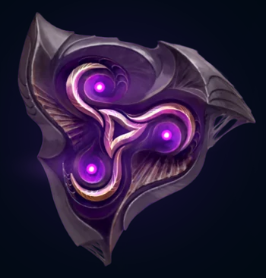

Screaming into existence with the birth of the universe, the Void is a manifestation of the unknowable nothingness that lies beyond. It is a force of insatiable hunger, waiting through the eons until its masters, the mysterious Watchers, mark the final time of undoing.
To be a mortal touched by this power is to suffer an agonizing glimpse of eternal
unreality, enough to shatter even the strongest mind. Denizens of the Void realm itself are
construct-creatures, often of only limited sentience, but tasked with a singular purpose - to usher in total
oblivion across Runeterra.
Screaming into existence with the birth of the universe, the Void is a
manifestation of the unknowable nothingness that lies beyond. It is a force of insatiable hunger, waiting
through the eons until its masters, the mysterious Watchers, mark the final time of undoing, and so usher in
total oblivion across Runeterra.
The Watchers originated from the Void, a vast canvas of
nothingness, in which the concept of its existence is a mystery, even to themselves. From the time the
bravest among them first entered Runeterra, the Watchers did not possess material form, nor were they even
aware of their own sentience. The Watchers did not know why they or the Void existed, only that it perturbed
them that something, that something being our universe, existed in the vast blackness of nothing. In their
curious and spiteful intent of understanding the material universe, they reshaped matter within it into
conscious extensions of themselves tasked to collect information and knowledge in their behalf, becoming the
prototype of the current and modern Voidborn.